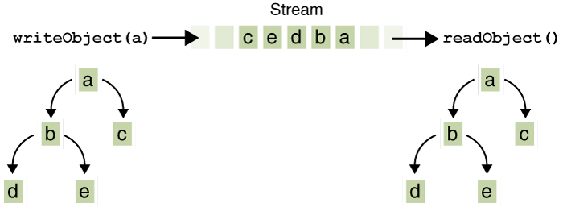

Just as data streams support I/O of primitive data types, object streams support I/O of objects. Most, but not all, standard classes support serialization of their objects. Those that do implement the marker interfaceSerializable.The object stream classes are
ObjectInputStreamandObjectOutputStream. These classes implementObjectInputandObjectOutput, which are subinterfaces ofDataInputandDataOutput. That means that all the primitive data I/O methods covered in Data Streams are also implemented in object streams. So an object stream can contain a mixture of primitive and object values. TheObjectStreamsexample illustrates this.ObjectStreamscreates the same application asDataStreams, with a couple of changes. First, prices are nowBigDecimalobjects, to better represent fractional values. Second, aCalendarobject is written to the data file, indicating an invoice date.If
readObject()doesn't return the object type expected, attempting to cast it to the correct type may throw aClassNotFoundException. In this simple example, that can't happen, so we don't try to catch the exception. Instead, we notify the compiler that we're aware of the issue by addingClassNotFoundExceptionto themainmethod'sthrowsclause.
Output and Input of Complex Objects
ThewriteObjectandreadObjectmethods are simple to use, but they contain some very sophisticated object management logic. This isn't important for a class like Calendar, which just encapsulates primitive values. But many objects contain references to other objects. IfreadObjectis to reconstitute an object from a stream, it has to be able to reconstitute all of the objects the original object referred to. These additional objects might have their own references, and so on. In this situation,writeObjecttraverses the entire web of object references and writes all objects in that web onto the stream. Thus a single invocation ofwriteObjectcan cause a large number of objects to be written to the stream.This is demonstrated in the following figure, where
writeObjectis invoked to write a single object named a. This object contains references to objects b and c, while b contains references to d and e. Invokingwriteobject(a)writes not just a, but all the objects necessary to reconstitute a, so the other four objects in this web are written also. When a is read back byreadObject, the other four objects are read back as well, and all the original object references are preserved.You might wonder what happens if two objects on the same stream both contain references to a single object. Will they both refer to a single object when they're read back? The answer is "yes." A stream can only contain one copy of an object, though it can contain any number of references to it. Thus if you explicitly write an object to a stream twice, you're really writing only the reference twice. For example, if the following code writes an object 
I/O of multiple referred-to objects
obtwice to a stream:EachObject ob = new Object(); out.writeObject(ob); out.writeObject(ob);writeObjecthas to be matched by areadObject, so the code that reads the stream back will look something like this: This results in two variables,Object ob1 = in.readObject(); Object ob2 = in.readObject();ob1andob2, that are references to a single object.However, if a single object is written to two different streams, it is effectively duplicated — a single program reading both streams back will see two distinct objects.